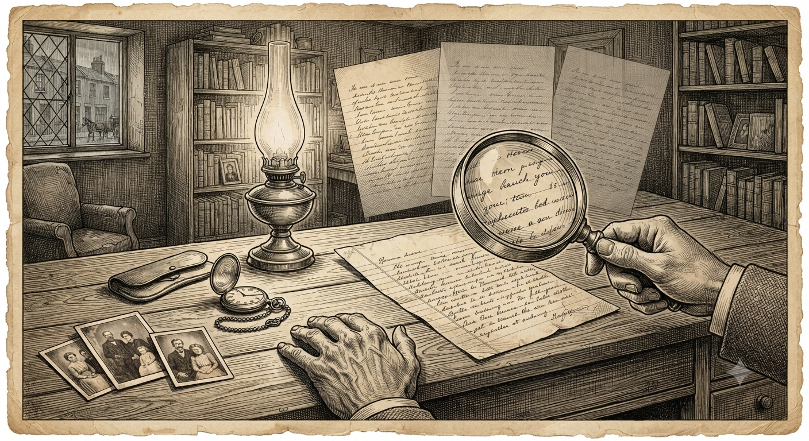

An Experiment in AI-Assisted Genealogical Research
This project is two things at once: the recovered story of Sam and Dora, and a real, honest test of whether AI tools can be trusted to help with family history research at all. No one left in the family reads Yiddish well enough to check this alone — so here's exactly how we made sure nothing got made up.

Getting an honest translation is only half the job. The letters also had to become a story — connected across decades, explained where they assume things a modern reader wouldn't know, and honest about which parts are solid and which are educated guesses.
Two people, working across the AI-versus-honesty line from opposite ends — one holding the letters and the final say, one building the machinery that keeps the record straight.
First, an assembly line for the pages. Each scan moves through the same steps in order — read the handwriting, translate it, piece together the damaged parts — and every step saves its work as tidy, labelled information rather than loose text. Older readings are never painted over. When a new reading disagrees with an earlier one, both are kept, so a genuine uncertainty is remembered instead of quietly smoothed away.
Then, a way to keep it all honest. Every person, place, date, and photo the letters mention gets its own entry in a registry — think of it as a card catalogue, one drawer for people, one for places, one for dates, one for the photographs. Nothing counts as a fact until it's actually confirmed: a claim starts life marked “unverified” and only crosses over deliberately. Each entry remembers exactly which page it came from and how sure we are, and where two readings disagree it keeps both rather than picking a favourite. Best of all, the honesty isn't just a promise: the system checks itself automatically, and if anything points to a source that doesn't exist or slips in a fact with no page behind it, the whole thing refuses to build.
A layer that decides what to publish. The registries hold everything the letters actually support — the full, honest record, warts and gaps included. But not all of it belongs on a public page, and the same fact can be told well or badly. So a second layer, a manifest, sits on top and makes the editorial calls: which items to show, in what order, with what wording. The split is deliberate — one side is the historian (what's true), the other is the storyteller (how to tell it). If something's historically wrong, you fix it in the record; if it's merely told better or worse, you change it in the manifest — and the two never get confused.
Last, giving the material shape — a living system. From that one honest foundation the same material is projected into different views — a browsable shelf of letters, a woven story, a family roster — each drawn from the shared source, so no version can wander off and invent its own version of events. Nothing here is a static web page hand-built once; the whole site is regenerated from the data. Correct a name at the root, rebuild, and the fix appears everywhere at once — on the letter, in the story, on the roster — with nothing patched by hand. It's less a finished website than a living record that can keep growing as more of the family's story surfaces.
Where the AI fits — and where it deliberately doesn't. Much of this was built with two AI assistants working alongside the two of us, one paired with each person: one helping build the machinery, one helping with the reading and editing. But the design draws a hard line around what AI is allowed to decide. It reads, translates, and drafts — it never gets the final word on what's true. A person confirms every reading; an AI's confident-sounding guess carries no more weight than that, and where the letters are too damaged to know, the honest answer is to say so rather than let a machine paper over the gap. The goal was never to hand family history to a computer — it was to use these tools carefully enough that a family with no Yiddish reader left could recover its own story without quietly inventing the parts it couldn't recover.
The tools that made it possible. For anyone curious about the actual stack: